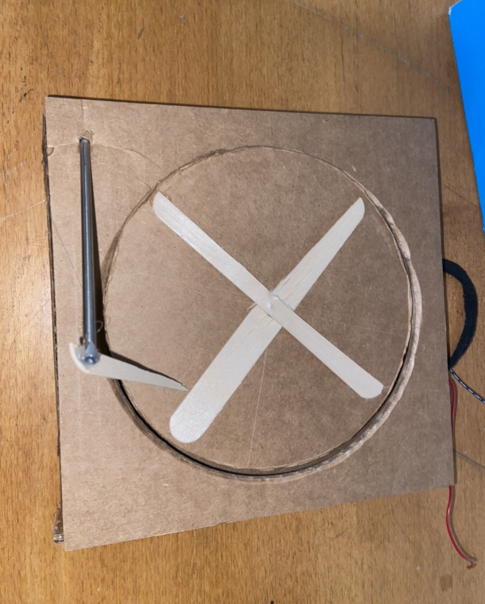

The assignment this week was to create a kinetic sculpture that includes movement. I first had to brainstorm to see what was possible to do with the time that we were given. My first idea was a money gun but i decided not to because i wasnt sure if it would fit within the parameters of the assignment. The second was a carousel, but due to the time I was unable to design all the parts in time. Thats when in the middle of cutting out cardboard someone asked if I was making a record player, this inspired me and lead to my final design being a spinning record player.
I started designing my shape, I knew that I wanted to have percice measurements so I used fusion 360. Having extremely percise measurements would get end up causing more issues further on in the buillding process. At the time it seemed like it was a good idea So i started cutting everything out and assembling. While assembling I realized that I was missing the side peices of the square. Instead of using fusion 360 like I should have done in the first place, I did it all by hand. This was not smart and wasted my time with trying different methods and tools for cutting cardboard. In the end the parts all fit together and it assembled quite nicely at the start.
At this point there has already been many errors and changes that I didnt see comming. Durring the assembily process there were more errors than in any other project I have ever done. First everything was fine, the box assembled great and all the hot glue stuck where it neeeded to. The right after that it was down hill. The cardboard was not alligned properly and even after ajustment still would not spin due to friction. It was extremely hard to finally get it to work. I tried cutting, grinding, sanding, hotglue, and anything else you could imagine. Nothing worked, Fially this issue was fixed with getting a metal rod and simply bending all of the lopsided parts down and out of the way. Mounting the moter in a way that it would still be able to spin without moving was another major issue. I didn't know I was allowed to hot glue the motor down to the cardboard so I spent too much time trying to find ways to keep it in place durring testing. Fially I found out I was able to hot glue it where it was needed and everything was smooth from that point on.
I learned a lot of things durring this weeks assignment. First of all I learned critical thinking and to think about what the best use of my time is. Secondly I learned that in order to have an object in side of another object move smoothly, I need to leave room for movement and wiggles. I also leanred to not make anything perminant unless you are sure you wont need to touch anthing there again. I belive that I was over all successful and that this week went well.